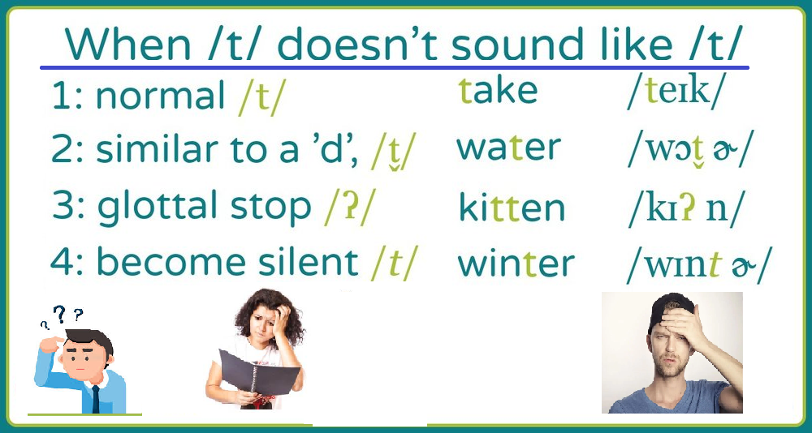
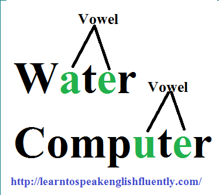

Listen to all these lessons via podcast: podcast name: Alok Pandey learn to speak English fluently.
In other words, it creates confusion when we hear D sound instead of T by American native. But, by knowing, “Why does the American pronounce the letter ‘T’ as D’?“. Certainly, it helps to enhance your level towards advance.
Therefore, it nags us somewhere in the back of our minds. In other words, Why does the American pronounce the letter T as D? Now pay attention, because what I’m about to say is really important:
So, the basic rule to comprise the letter ‘T’ sound as a ‘D’ is. When the letter ‘T’ is between two vowels (a, e, i, o, u, and y) sounds.
Certainly, the letter ‘T’ is between two vowels letter as shown above. Thus, the pronunciation of the letter ‘T’ will be considered as a flat ‘T’. It means the flat sound is of the sound ‘D’.
Y is considered to be a vowel if…
In such cases, the letter y is pronounced as either the long vowel e or short or long i (usually as a long i when ending a word)—and, for all intents and purposes, it is a vowel. When y forms a diphthong—two vowel sounds joined in one syllable to form one speech sound, such as the “oy” in toy, “ay” in day, and “ey” in monkey—it is also regarded as a vowel.
For some Example,
The mentioned words with letter “T” pronounce like letter ‘D”.
| water | opportunity | party |
| quality | reality | democratic |
| citizen | settle | British |
| perspective | visitor | photo |
| representative | poverty | criticism |
| little | letter | better |
| meeting | total | executive |
| majority | identity | possibility |
| committee | bottle | bottom |
| limited | monitor | priority |
| political | daughter | society |
| whatever | notice | writer |
| critical | title | battle |
| voter | setting | writing |
| faculty | digital | dramatic |
| city | hospital | matter |
| ability | positive | beautiful |
| safety | editor | status |
| United | duty | theater |
| creative | veteran | initiative |
| later | security | activity |
| pretty | capital | property |
| attitude | quarter | university |
| category | capacity | metal |
| alternative | tomato | potato |
| community | article | data |
| authority | responsibility | pattern |
| variety | native | reporter |
| negative | rating | greatest |
| personality | butter | marketing |
| computer | item | facility |
| minority | competitive |